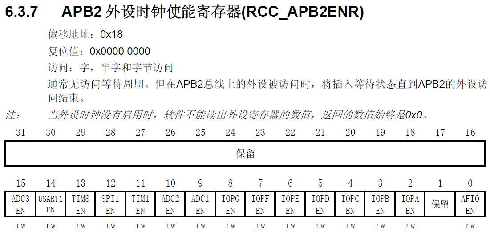
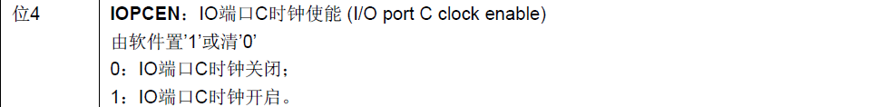
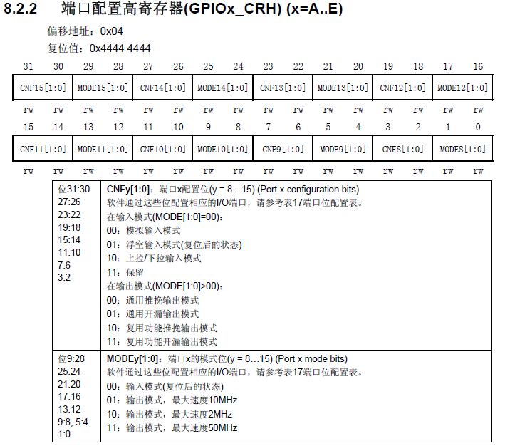
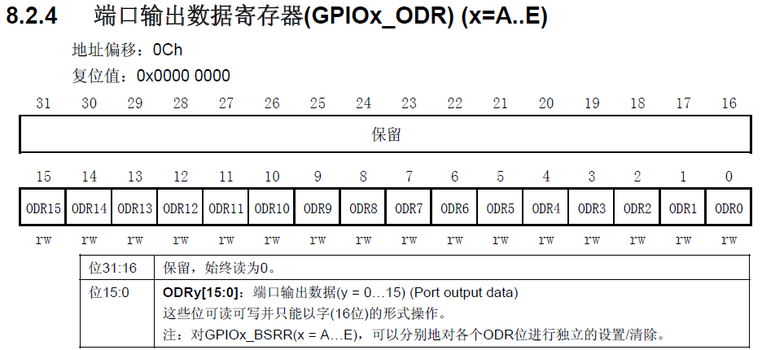
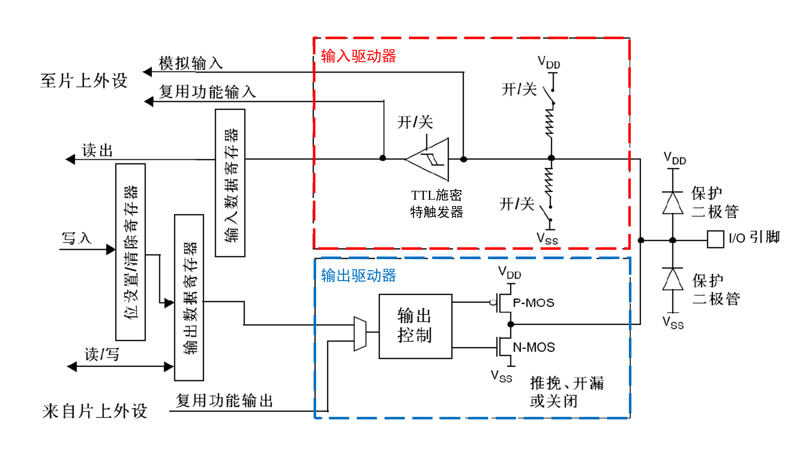

STM32入门一
本篇文章主要记录在入门STM32过程中采用直接配置寄存器的方式来控制STM32以及对GPIO的相关理解。
采用直接配置寄存器的方式来控制STM32

上图为所使用的STM32单片机。在这里，我们试图通过直接配置寄存器的方式来操纵PC13口对应的测试灯(低电平亮，高电平不亮)。由于GPIOC与APB2相连。因此，第一步就是开启其的时钟信号。查阅手册可知，RCC_APB2ENR为APB2外设时钟使能寄存器。并且第4位对应IOPC EN，如下图所示。


可使用如下的语句实现时钟信号的开启。
// method 1:
RCC->APB2ENR = 0x00000010;
// method 2:
RCC->APB2ENR |= 0x10;
// method 3:
// unsigned int *pRCC = (unsigned int *)0x40021000;
// unsigned int *offset = (unsigned int *)0x18;
unsigned int *add = (unsigned int *)0x40021018;
*add |= 0x10;

由上图可知，初始情况下，该寄存器的值为0x44444444，即8至15号端口为输入模式，并且为浮空输入模式。在这里，我们需要改变13号端口的模式为通用推挽输出模式(最大速度50MHz)，即该寄存器对应的第23至20位为0011，即0x3。可使用如下的语句实现。
// method 1:
GPIOC->CRH |= 0x3<<20;
// method 2:
// unsigned int *pGPIOC = (unsigned int *)0x40011000;
// unsigned int *offset = (unsigned int *)0x04;
unsigned int *add_CRH = (unsigned int *)0x40011004;
*add_CRH |= 0x3<<20;

实现的代码如下。
// method 1:
GPIOC->ODR |= 0x2<<12; // 灯灭
GPIOC->ODR |= 0x0; // 灯灭
// method 2:
// unsigned int *pGPIOC = (unsigned int *)0x40011000;
// unsigned int *offset = (unsigned int *)0x0c;
unsigned int *add_ODR = (unsigned int *)0x4001100c;
*add_ODR |= 0x2<<12; // 灯灭
*add_ODR |= 0x0; // 灯亮
GPIO
GPIO是General Purpose Input Output的缩写，即通用输入输出口。在输出模式下，其可控制端口输出高低电平。在输入模式下，其可读取端口的高低电平或电压。GPIO位结构如下图所示。

- I/O引脚附近的保护二极管：当I/O引脚的电压大于3.3V时，上方保护二极管导通。当I/O引脚的电压小于0V时，下方保护二极管导通。当I/O引脚的电压在0V至3.3V之间，上方和下方的两个保护二极管均不会导通。此时，保护二极管对电路没有影响。
- 上拉电阻与下拉电阻：上拉电阻与下拉电阻的开关可以通过程序配置。若上面导通，下面断开，则为上拉输入模式。若下面导通，上面断开，则为下拉输入模式。若两个都断开，则为浮空输入模式。这样的设置是为了给输入提供一个默认的输入电平。
- 施密特触发器：对输入电压进行整形。如果输入电压大于某一阈值，则输出瞬间升为高电平。当输入电压小于某一阈值，则瞬间降为低电平。
- P-MOS与N-MOS：电子开关，需要注意的是在输出控制中存在一个反相器。在推挽输出模式下，P-MOS与N-MOS均有效。当数据寄存器为0时，上管断开，下管导通，输出直接接到Vss，输出低电平。当数据寄存器为1时，上管导通，下管断开，输出直接接到VDD，输出高电平。在开漏输出模式下，P-MOS无效，只有N-MOS在工作。数据寄存器为1时，下管断开，这时相当于输出断开，对应高阻模式，无驱动能力。数据寄存器为0时，下管导通，输出低电平。
GPIO的8种模式：
| 模式名称 | 性质 | 特征 |
|---|---|---|
| 浮空输入 | 数字输入 | 可读取引脚电平，若引脚悬空，则电平不确定 |
| 上拉输入 | 数字输入 | 可读取引脚电平，内部连接上拉电阻，若引脚悬空，则电平默认为高电平 |
| 下拉输入 | 数字输入 | 可读取引脚电平，内部连接下拉电阻，若引脚悬空，则电平默认为低电平 |
| 模拟输入 | 模拟输入 | GPIO无效，引脚直接接入内部ADC |
| 开漏输出 | 数字输出 | 输出引脚的电平，高电平为高阻态，无驱动能力，低电平接Vss |
| 推挽输出 | 数字输出 | 输出引脚的电平，高电平接VDD，低电平接Vss |
| 复用开漏输出 | 数字输出 | 由片上外设控制，高电平为高阻态，无驱动能力，低电平接Vss |
| 复用推挽输出 | 数字输出 | 由片上外设控制，高电平接VDD，低电平接Vss |
案例：点灯(GPIO的输出)
此案例中，将一个LED灯的正极接至PA0端口，负极接至单片机的负极。当PA0端口为高电平时，LED灯亮。当PA0端口为低电平时，LED灯灭。点亮LED灯的三个主要步骤为：
- 开启时钟。可利用如下的代码实现。
- 配置GPIO端口的模式。可利用如下的代码实现。
- 设置GPIO端口值。可利用如下的代码实现。
为实现LED灯闪烁的效果，可使用如下所示的延时函数。
void Delay_us(uint32_t xus)
{
SysTick->LOAD = 72 * xus;
SysTick->VAL = 0x00;
SysTick->CTRL = 0x00000005;
while(!(SysTick->CTRL & 0x00010000));
SysTick->CTRL = 0x00000004;
}
SysTick有4个寄存器，如下表所示。(注：在使用SysTick产生定时的时候，只需要配置前3个寄存器)
| 寄存器名称 | 寄存器描述 |
|---|---|
| CTRL | SysTick控制及状态寄存器 |
| LOAD | SysTick重装载数值寄存器 |
| VAL | SysTick当前数值寄存器 |
| CALIB | SysTick校准数值寄存器 |
SysTick->LOAD = 72 * xus：设置SysTick定时器的重装载值。由于STM32通常运行在72MHz主频下，72个时钟周期=1微秒，所以将xus乘以72得到需要的时钟周期数。SysTick->VAL = 0x00：清楚当前SysTick计数器的值，使其从0开始计数。SysTick->CTRL = 0x00000005：CTRL寄存器的第0位为SysTick定时器的使能位(此处应为1)，第2位为时钟源选择位(此处应为1，对应时钟源为处理器时钟)，即0x5。while(!(SysTick->CTRL & 0x00010000))：CTRL寄存器的第16位为COUNTFLAG标志。当计数器计到了0时，该位被置为1。该句循环等待计时完成。SysTick->CTRL = 0x00000004：关闭SysTick定时器(即SysTick定时器的使能位置0)。
上述的Delay_us函数的输入值的单位为微秒。若需将其调整为毫秒或秒，可使用下面的函数。